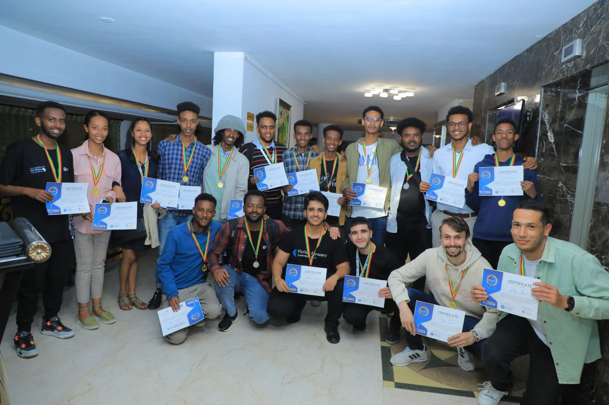

Rassembler les Talents Tech Africains grâce au Hackathon IA pour l'Impact
Cette édition présente un entretien sur l'initiative hackathon d'A2SV — favoriser l'innovation et l'entrepreneuriat au sein des communautés tech africaines grâce à l'IA générative.
Qu'est-ce qui a inspiré A2SV à créer le hackathon, et quelle était la vision derrière cette initiative ?
A2SV a créé le hackathon pour faire émerger des idées susceptibles de devenir des produits viables « créés par des Africains, pour des Africains, en Afrique ». Lorsqu'OpenAI a rendu l'IA générative accessible au public, nous avons perçu le potentiel de révolutionner les industries et d'inspirer la prochaine génération de leaders tech africains. Nous voulions créer un événement à l'échelle du continent pour mettre en valeur les talents africains et aller au-delà des bootcamps de courte durée habituels.
Comment s'est déroulé le hackathon 2023 ? Quels ont été les résultats ?
L'événement inaugural a dépassé toutes les attentes. Malgré des budgets marketing limités, il a atteint 47 pays avec plus de 3 700 participants. La réponse a été massive, avec des idées brillantes proposées par des étudiants talentueux de tout le continent. Nous avons maintenu une dotation de 30 000 $, et le hackathon s'est étendu sur trois mois avec plusieurs étapes.
Structure du hackathon :
- Quarts de finale : Les participants ont été jumelés avec des mentors de l'industrie
- Demi-finales : Les projets ont bénéficié de conseillers spécialisés, durant environ deux mois
- Finale : Les 8 meilleures équipes se sont rendues en Éthiopie pour des démonstrations et l'évaluation finale
Certains finalistes et projets lauréats ont poursuivi leur parcours au-delà du hackathon, en se constituant en sociétés et en obtenant des financements supplémentaires.
Quelles sont les nouveautés de l'édition 2024 ?
Cette année présente des réseaux de mentorat mondiaux élargis, avec des inscriptions de Meta, Google, TikTok, Salesforce et LinkedIn — élargissant considérablement l'expertise au-delà du réseau interne d'A2SV. Nous avons amélioré la structure d'accompagnement et augmenté l'envergure de l'événement.
Quelle est la vision future pour le hackathon ?
Les projets incluent la création d'une communauté de fondateurs regroupant tous les participants, des systèmes de soutien post-hackathon renforcés, et à terme une expansion vers des hackathons mondiaux, bien que l'accent reste actuellement sur l'Afrique. Nous voulons créer une plateforme durable où les meilleurs esprits se réunissent.
Comment la mission plus large d'A2SV a-t-elle évolué au cours de ces 5 années ?
En cinq ans, A2SV a fourni une éducation tech gratuite à plus de 800 étudiants africains, lancé 7 projets à fort impact dans les domaines de la santé, de l'éducation et du développement communautaire, créé plus de 150 emplois pour les anciens élèves et obtenu plus de 60 offres d'emploi dans les grandes entreprises technologiques.
Nous invitons le soutien par le biais de contributions financières, de mentorat et de partenariats organisationnels. Contact : emre@a2sv.org